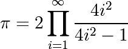

1.2.3. Control Flow¶
Controls the order in which the code is executed.
1.2.3.1. if/elif/else¶
>>> if 2**2 == 4:
... print('Obvious!')
...
Obvious!
Blocks are delimited by indentation
Tip
Type the following lines in your Python interpreter, and be careful
to respect the indentation depth. The Ipython shell automatically
increases the indentation depth after a colon : sign; to
decrease the indentation depth, go four spaces to the left with the
Backspace key. Press the Enter key twice to leave the logical block.
>>> a = 10
>>> if a == 1:
... print(1)
... elif a == 2:
... print(2)
... else:
... print('A lot')
A lot
Indentation is compulsory in scripts as well. As an exercise, re-type the
previous lines with the same indentation in a script condition.py, and
execute the script with run condition.py in Ipython.
1.2.3.2. for/range¶
Iterating with an index:
>>> for i in range(4):
... print(i)
0
1
2
3
But most often, it is more readable to iterate over values:
>>> for word in ('cool', 'powerful', 'readable'):
... print('Python is %s' % word)
Python is cool
Python is powerful
Python is readable
1.2.3.3. while/break/continue¶
Typical C-style while loop (Mandelbrot problem):
>>> z = 1 + 1j
>>> while abs(z) < 100:
... z = z**2 + 1
>>> z
(-134+352j)
More advanced features
break out of enclosing for/while loop:
>>> z = 1 + 1j
>>> while abs(z) < 100:
... if z.imag == 0:
... break
... z = z**2 + 1
continue the next iteration of a loop.:
>>> a = [1, 0, 2, 4]
>>> for element in a:
... if element == 0:
... continue
... print(1. / element)
1.0
0.5
0.25
1.2.3.4. Conditional Expressions¶
if <OBJECT>: |
|
|---|---|
a == b: | Tests equality, with logics: >>> 1 == 1.
True
|
a is b: | Tests identity: both sides are the same object: >>> 1 is 1.
False
>>> a = 1
>>> b = 1
>>> a is b
True
|
a in b: | For any collection >>> b = [1, 2, 3]
>>> 2 in b
True
>>> 5 in b
False
If |
1.2.3.5. Advanced iteration¶
Iterate over any sequence¶
You can iterate over any sequence (string, list, keys in a dictionary, lines in a file, …):
>>> vowels = 'aeiouy'
>>> for i in 'powerful':
... if i in vowels:
... print(i)
o
e
u
>>> message = "Hello how are you?"
>>> message.split() # returns a list
['Hello', 'how', 'are', 'you?']
>>> for word in message.split():
... print(word)
...
Hello
how
are
you?
Tip
Few languages (in particular, languages for scientific computing) allow to loop over anything but integers/indices. With Python it is possible to loop exactly over the objects of interest without bothering with indices you often don’t care about. This feature can often be used to make code more readable.
Warning
Not safe to modify the sequence you are iterating over.
Keeping track of enumeration number¶
Common task is to iterate over a sequence while keeping track of the item number.
Could use while loop with a counter as above. Or a for loop:
>>> words = ('cool', 'powerful', 'readable') >>> for i in range(0, len(words)): ... print((i, words[i])) (0, 'cool') (1, 'powerful') (2, 'readable')
But, Python provides a built-in function -
enumerate- for this:>>> for index, item in enumerate(words): ... print((index, item)) (0, 'cool') (1, 'powerful') (2, 'readable')
Looping over a dictionary¶
Use items:
>>> d = {'a': 1, 'b':1.2, 'c':1j}
>>> for key, val in sorted(d.items()):
... print('Key: %s has value: %s' % (key, val))
Key: a has value: 1
Key: b has value: 1.2
Key: c has value: 1j
Note
The ordering of a dictionary is random, thus we use sorted()
which will sort on the keys.
1.2.3.6. List Comprehensions¶
Instead of creating a list by means of a loop, one can make use of a list comprehension with a rather self-explaining syntax.
>>> [i**2 for i in range(4)]
[0, 1, 4, 9]
Exercise
Compute the decimals of Pi using the Wallis formula:
